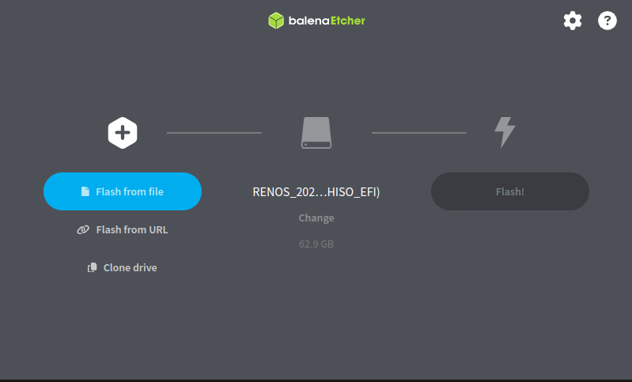

How to begin the installation process of RenOS
What you've just downloaded is called an ISO
file.
An ISO file is basically a sort of image that can be written to a disk (think of it like a compressed copy
of a real disk).
Here's what you need to do to be able to install RenOS via this disk image.
Microsoft Windows
Download the app called Balena Etcher and follow the setup instructions.When you run the app, this window appears.

Press the "Flash from file" button and select the newly downloaded file.
Once you've selected the file, press the change button below the disk icon. Then select a USB drive that does not contain any important data and that you want to use as a RenOS installation/recovery disk and press the flash button.
Now, open the command prompt app as an administrator. Paste this command into the prompt and your computer should reboot into the UEFI/BIOS.
shutdown /r /fw /t 1
Once you're in your computer's UEFI/BIOS you'll have to change a few things. Every motherboard manufacturer have set up things a little bit differently, so follow along closely.
Find the secure boot option under something like "security". Make sure it's set to off. Then, find the boot order setting and change your USB drive to be on top of that list. The boot order may look something like this:
- Hard disk
- USB drive
- USB drive
- Hard disk
Now save the changes and exit the BIOS and you should be booting a live version of RenOS.
I recommend following the Installation guide next.
Various Linux distributions
If you already use Linux, then you surely know how to boot a live version of it, right?Follow the steps for Microsoft Windows using your favourite flashing utility and boot RenOS, simple as that. Oh, and the command for systemd-based systems to reboot into the UEFI/BIOS is
su -c "systemctl reboot --firmware-setup"